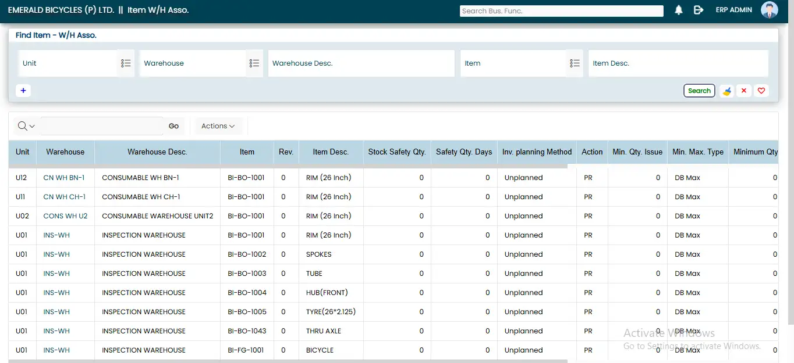
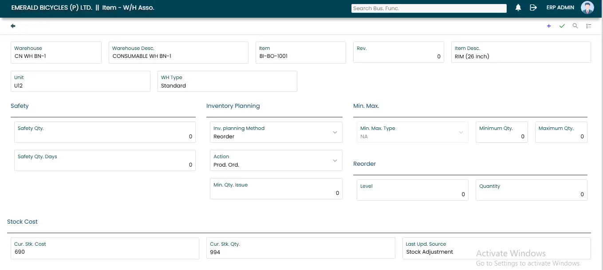

<div data-category="Inventory Control" data-title="Item W/H Association" data-updated="January 27, 2026" data-contributors="RoadmapIT" data-breadcrumb="Home,Inventory Control,Item W/H Association">
  <div class="page-content">
    <p>This is the master setup for defining the Warehouse Association for the Items. This means that this is the screen where the user can enter and manage the warehouse locations where each item or product is stored or available in their inventory system.</p>
    <h5>Navigation path:</h5>
    <p class="fs-6">Supply Chain Management \ Inventory \ Setup \ Items W/H Asso.</p>
    
    <ul style="list-style-type: none; align-content: center">
      <li class="mouse-icon">Search screen displays the list of Items associated with the Warehouse with the relevant details</li>
      <li class="mouse-icon">User can filter the respective documents by entering the search parameters at the header.</li>
      <li class="mouse-icon">On Clicking search button, system displays the results relevant to the search parameters entered.</li>
      <li class="mouse-icon">
        Using
        
        icon, entered search parameters can be cleared.
      </li>
      <li class="mouse-icon">
        To close the screen, use
        <i class="bi bi-x fs-4 mx-2 text-danger"></i>
        icon.
      </li>
      <li class="mouse-icon">
        Click
        <i class="bi bi-plus fs-4 mx-2 text-primary"></i>
        button to create new Item W/H association
      </li>
    </ul>
    
    <ul style="list-style-type: none; align-content: center">
      <li class="mouse-icon">Associate a different warehouse for the item to store item in different warehouse.</li>
      <li class="mouse-icon">Also we can define the minimum and maximum quantity of Item.</li>
      <li class="mouse-icon">Enter the Reorder quantity of the Item.</li>
      <li class="mouse-icon">Choose the Planning method based on requirements.</li>
      <li class="mouse-icon">Choose the Action based on requirements.</li>
      <li class="mouse-icon">
        Click
        <i class="bi bi-check-lg fs-4 mx-1 text-success"></i>
        to save Item W/H Asso.
      </li>
    </ul>
  </div>
</div>
